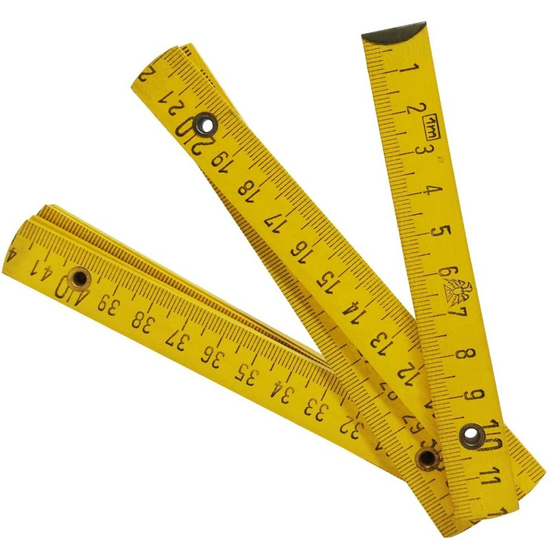

El metro plegable, metro de carpintero o metro de albañil es un instrumento de medida de precisión media, que se utiliza en la construcción, carpintería y bricolaje. Entra en el grupo de medir y marcar. Puede ser de madera, color amarillo y consta de 5 pares avisagradas cada 20 cm con numeración a ambos lados de él.
